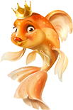
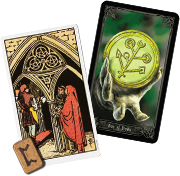
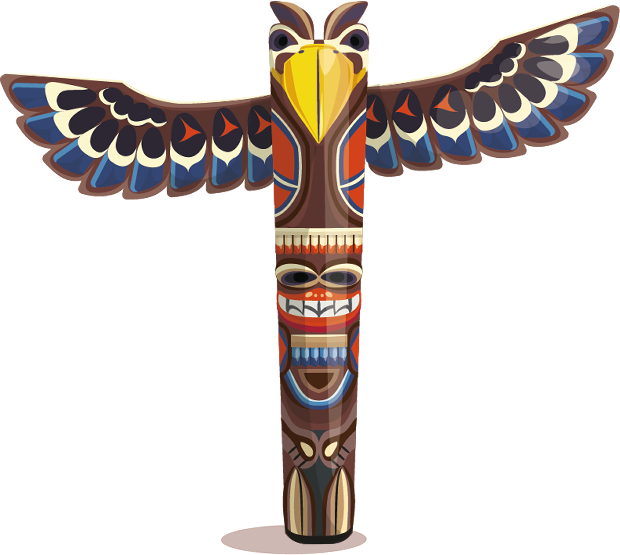

В процессе вебинара ты будешь Учиться находить ответы на любые вопросы, которые у тебя есть.
Практика и только практика с минимально необходимой информацией.
Моя задача – дать тебе удочку! А рыбу ловить - ты научишься сам. 
Для того, чтобы получить результат, мы поработаем с Образами из наших любимых Сказок, Старшими Арканами карт Таро, рунами, Тотемами. 
Что в итоге?
Ты поймёшь! Каждая система хороша по-своему и нужна в разных жизненных ситуациях.
У тебя появится вкус к жизни, способность менять её в нужном для тебя направлении и влиять на ситуации в своей жизни.
